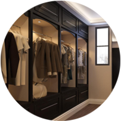

INDUSTRIAL
O estilo caracterizado por tubulações expostas, cimento queimado nas paredes e uso de tijolos como elementos de decoração chama-se industrial.
Como tendência encontrada em móveis, trata-se de uma identidade que explora tons neutros, como cinza, branco, preto e bege — e que serve como base para a personalização dos cômodos.
O inox e outros metais são utilizados junto à madeira, com elementos que lembram peças vintage ou produtos garimpados em fábricas antigas. O arquiteto lembra que “o estilo industrial está em alta, é uma tendência e pode ser explorado de formas diversas”.
CLÁSSICO PROVENÇAL
A referência clássica com um toque levemente moderna está em alta, principalmente quando misturada ao estilo provençal. Esses móveis clássicos podem ser encontrados, inclusive, nos móveis planejados.
Originário do sul da França, o estilo clássico com toque provençal remete aos campos de lavanda e às montanhas. Estampas florais, uso de madeira e linhas rebuscadas complementam o conceito clássico.
MINIMALISTA
“Muito se fala sobre o estilo minimalista, mas é importante compreender o conceito”, destaca Menin. Quando se pensa em estilo minimalista, a ideia é de ambientes esteticamente limpos, sem excessos e que contam com apenas o que é realmente necessário.
As linhas, dessa forma, são limpas e o design é funcional. Formas geométricas, retas e neutras contribuem para uma estética que não se perde com o tempo. Texturas naturais, como o couro e a madeira, são referência nos móveis de estilo clássico.
ESCANDINAVO
Os móveis de estilo escandinavo carregam uma referência nórdica que mistura o rústico ao elegante. O resultado é um ambiente com bases aconchegantes e funcionais.
Materiais como a madeira são utilizados em peças de linhas retas e amplas, enquanto o vidro fica em composição com metais simples.
"Cada vez mais presente em casas e apartamentos, o closet planejado é ideal para quem procura por organização, praticidade e comodidade. Apesar de ser mais conhecido em espaços exclusivos, um closet também pode ser idealizado em lugares menores, independente do tamanho do quarto, desde que siga as medidas mínimas exigidas"

Closet